示例# 以下示例由 sphinx-gallery 自动生成，源脚本是 examples/ 下以 plot_ 开头的 Python 文件。 编译时每个脚本会被真实执行，生成的图自动成为缩略图。 基础绘图示例# 本节展示 Python 基础语法的可视化示例，帮助理解数据类型与控制流。 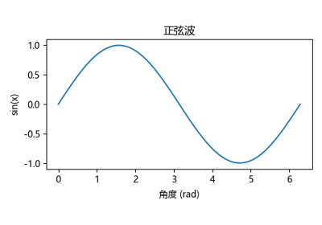 绘制正弦波 绘制正弦波 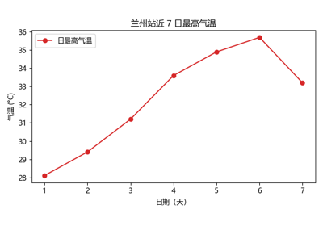 我的第一个气象图 我的第一个气象图 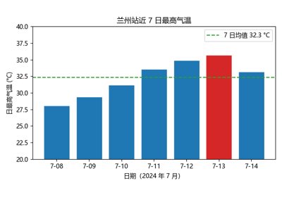 用基本数据类型存储站点信息 用基本数据类型存储站点信息 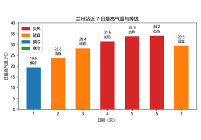 气温等级判定与逐日可视化 气温等级判定与逐日可视化 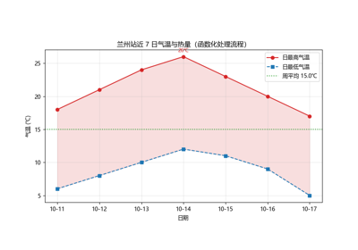 函数化气温处理流程 函数化气温处理流程 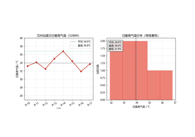 Station 类的气温统计与可视化（兼用兰州站示例数据） Station 类的气温统计与可视化（兼用兰州站示例数据） NumPy 计算示例# 本节展示 NumPy 数组运算与可视化的示例。 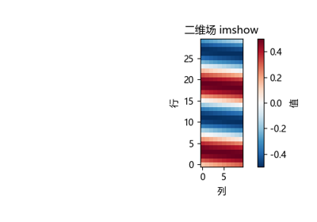 二维数组可视化 二维数组可视化 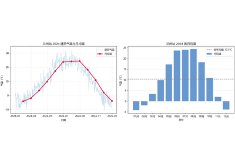 Pandas 气温月度分析 Pandas 气温月度分析 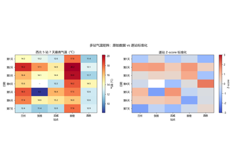 多站气温矩阵的计算与可视化 多站气温矩阵的计算与可视化 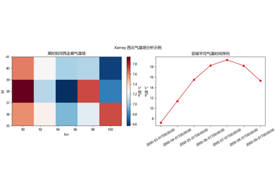 Xarray 西北气温场分析 Xarray 西北气温场分析 气象数据可视化示例# 本节展示 Matplotlib 与 Cartopy 绘制气象场的示例。 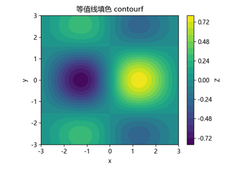 等值线填色图 等值线填色图 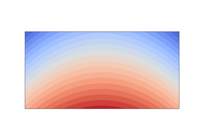 西北地区气温场地图 西北地区气温场地图 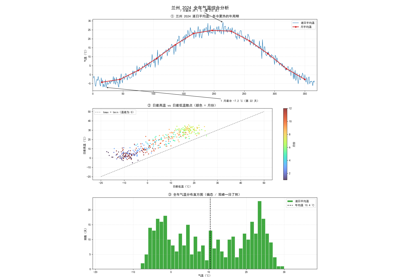 兰州气温时间序列综合分析 兰州气温时间序列综合分析 Gallery generated by Sphinx-Gallery